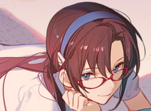
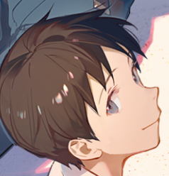

明日香
明日香是第二适任者，也是福音战士2号机的驾驶员。她同时拥有德国与日本的血统，在德国出生及长大，但她是美国公民。
明日香不曾在任何人面前真心哭泣过，可以说在母亲死亡后，明日香就下定决心不再在人前表露自己的软弱，
但是一个人不可能完全消除自己的软弱，所以明日香曾经跟碇真嗣躺在一起过，在睡梦中呼唤妈妈，
在对战鸟天使的时候被使徒挖掘出了真心而受到莫大打击，仿佛全身心都被玷污了一般。
绫波零
EVA零号机驾驶员，EVA第一适格者。随EVA计划一同启动的少女，
少女时期一直在研究所生活，成长后一直作为EVA系列研制和启动的实验品，
驾驶实验试作机零号机，提供实验数据。

真希波
真希波是EVA五号机的适格者，身穿与五号机配套的绿色插入栓服。
不论处于多么绝望的环境，真希波都没有表现出像是一般少女那样的反应，精神很强大，
与其说不曾被困境压垮，到不如说是不允许自己被压垮。
这也可以推测她没有走过普通人的平常的路线，她的故事必定也十分坎坷。目前仍有不少谜题未解答。

碇真嗣
脾气温顺、重视朋友，经常负责美里的起居及为绫波丽收拾房间。律子评论他的行为方式是听从他人的指令。
平常的性格表现十分胆小怕事、内向且没有自信心，不擅长与他人交际。母亲过世后就住在亲戚家中。
有着内向又纠结的性格，不喜欢接触陌生人，一直只是照着别人的要求而生活。
习惯把自己的内心向外界封闭──然而不愿意与人接触的同时又很在乎别人对待自己的看法，
是个本质上有所矛盾的人。之后在和朋友们的相处中慢慢地敞开了心扉。看似弱气却十分固执，
在极端情况下会叛逆甚至反抗。在非常时刻的觉醒会强大到让人震撼。新剧场版：破中更是展现出了天元突破般的气势。